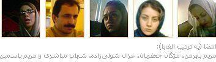

|
|

ه به دست آوردهايم و چه بايد كرد؟
ميزگرد نگاهی از درون و بيرون به دستآوردهای تا به امروز كمپين و چشمانداز پيش رو
تحريريهی بخش «زنان پارس»
پنج شنبه11 مهر 1387
فروغ- چند بار با هم نشست و برخاست كرديم. يك بار در جلسهيی مقدماتی فقط گپ زديم و البته حيف كه تنها به عنوان دستگرمی بحثهای آن روز را ثبت نكرديم. نمیدانستيم كه يكی از همراهان آن جلسه ديگر فرصتی برای حضور در برنامههای بعدیمان نمیيابد تا نظرات او هم مستند شود. محمد فلاحنيا را میگوييم. پس قبل از ادامهی هر سخنی، لازم است از او برای همراهیاش سپاسگزار باشيم و به خاطر كوتاهیمان در جا ماندن از نظراتاش در اين مقال عذرخواه!
يه هر حال، در اين نشستهای مختلف و متعدد كه تركيب جمعمان كم و زياد میشد، به تدريج اين ميزگردی كه در آن به جدل پرداختهايم سر و شكل گرفت. حجم مطلبی كه تنظيم شده چندان طولانی نيست، اما ساعتها حضور فيزيكی، تلفنی و اينترنتی پشت اين خطوط خوابيدهاند. انگار فيلمسازی كه ساعتها راش میگيرد و بعد موقع تدوين يك فيلم كوتاه هفت هشت دقيقهيی آمادهی پخش میكند.

باز هم به هر حال، در اين مباحثات و گاه مجادلات، در بارهی دستآوردهای كمپين بحث كردهايم، به طور مصداقی نيز به مسأله نگاه كردهايم، در رویكردمان به ماجرا تك به تك صادق بودهايم و اين در تعارض نظراتمان رد گرفته میشود، اما مهم اين است كه همآهنگ تا آخر خط را رفتهايم. در آخر خط كه بعد از مرور و تحليل كاستیها و موانع كار به آن میرسيم، به آينده نگاه خواهيم انداخت، هرچند جوابی قطعی قرار نيست بيابيم. آخر، به نظر شما وقتی هايزنبرگ و عدم قطعيتاش ذره ذره و بنياد هستی را دارند توجيه میكنند، ما چه حرفی میتوانيم بزنيم كه غير از آن نشود؟
مريم بهرمن، مژگان جعفريان، غزال شولیزاده، شهاب مباشری و مريم ياسمين*
شهاب: به نظر من خوب است بحث را از نگاه به وضعيت امروز كمپين شروع بكنيم. از لحاظ اين كه ببينيم چه دستآوردهايی داشته و آيا نيازی به تغيير و تحول دارد يا نه.
مريم بهرمن: وقتی كمپين راه افتاد و شروع به كار كرد، فضا خيلی بسته بود و محدوديت وجود داشت، محدوديتی كه البته بيشتر شده است برای انجام فعاليت اجتماعی. اما كمپين اين تأثير را داشت كه توانست بسياری را، كه دارای فكرها و نگاههای مختلفی بودند، دور يك محور گرد هم بياورد و يخ بیحركتی و ركودی كه داشت سازمانهای غير دولتی را فرا میگرفت شكست. به نظر من اين از همان ابتدا يكی از دستآوردهای خيلی خوب كمپين بود.
يكی ديگر از دستآوردهای خوب كمپين مستندسازی بود. كاری كه به تدريج و در طول زمان انجام شد و همچنان ادامه دارد. مقالاتی كه نوشته شد و كتابهايی كه تهيه شد و همه يك موضوع را دنبال میكردند. از طرفی، در خيلی از اين مستندات بسياری از تجربههای روزانه و شفاهی به ثبت رسيد.
مريم ياسمين: من فکر میکنم بزرگترين دستآورد کميپن اين بود که بستری فراهم کرد تا کنشگران اجتماعی به صورت مستقيم و چهره به چهره در راستای عمومی کردن مطالبات با مردم عادی به خصوص زنان به صحبت بپردازند و در تلاشی دوسويه جهت آگاهی بخشيدن و آگاه شدن به دور از شعارهای کلان به گفتوگو بنشينند. به اين ترتيب، مردمی كه خيلیهاشان اصلا اعتنايی و حسی نسبت به برخی مسائل و نيازها نداشتند، نسبت به كمبودها و نارسايیهای قانونی آگاه شدند. از سويی، میتوان گفت که کمپين فرصتی ايجاد کرد تا طی برنامههای آن در يک ارتباط شبکهيی فعالان و کنشگران اين حوزه در شهرهای مختلف با يکديگر تعامل بيشتری داشته باشند و اين خود تا حدی به تغيير قالبی که طی سالها سبب مرکزيت محوری فعاليتهای اجتماعی شده بود، انجاميد.
مژگان: به نظرمن هدف کمپين در کل آگاهیرسانی و عمومی کردن مطالبات حقوقی فعالان حوزهی زنان بود، مطالباتی که با چند مادهی قانونی مشخص محدود شده بودند. اين هدف کيفی با جمعآوری امضا به صورت کمی میتوانست نمود پيدا کند، اتفاقی که در بعد کمّی آن متآسفانه رضايتبخش نبوده.
مژگان جعفريان:کميپن در سالهای اخير تأثير زيادی بر حرکتهای عملگرايانهی جنبش زنان گذاشته و اين تأثيرش ادامه خواهد داشت. از طرفی، با تفکيک جنبش زنان به دو زير شاخهی جنبش حقوقی و اجتماعی، میتوان گفت که کمپين بزرگترين جنبش حقوقی زنان بوده است.
مريم ياسمين:من فکر میکنم بزرگترين دستآورد کميپن اين بود که بستری فراهم کرد تا کنشگران اجتماعی به صورت مستقيم و چهره به چهره در راستای عمومی کردن مطالبات با مردم عادی به خصوص زنان به صحبت بپردازند و در تلاشی دوسويه جهت آگاهی بخشيدن و آگاه شدن به دور از شعارهای کلان به گفتوگو بنشينند.
شهاب: جدا از بحث اطلاعرسانی و آگاهیبخشی عمومی مطالبات زنان، آنچه تا حالا در بارهاش بحث شد، به نظر میآيد دستآوردهايی درونیست كه بيشتر برای خود اعضای کمپين و كنشگران بهدرد میخورد. کمپين در عرصهی گستردهی اجتماعی چه دستآوردهايی داشته؟ منظورم اين است كه اگر تأمين هدف اصلی و غايی كمپين كه تغيير قانون است، محقق نشده و البته دور از انتظار هم نبوده، در سطح خردتر به چه چيزی دست يافته است؟ به خصوص، نسبت کمپين و دستآوردهايش با جنبش زنان و برای آن چهطور بوده است؟
مژگان: کمپين يک ابزار برای يک جنبش بزرگ زنان بوده، يک تاکتيک که البته اگر به درستی پياده و عمل میشد، نتيجهاش به سرانجام رسيدن گوشهيی از مطالبات جنبش زنان بود. با اين همه، کميپن در سالهای اخير تأثير زيادی بر حرکتهای عملگرايانهی جنبش زنان گذاشته و اين تأثيرش ادامه خواهد داشت. از طرفی، با تفکيک جنبش زنان به دو زير شاخهی جنبش حقوقی و اجتماعی، میتوان گفت که کمپين بزرگترين جنبش حقوقی زنان بوده است.
مريم بهرمن: در يكی از اولين سرودهای كمپين جملهيی بود به اين مضمون كه جنبش زنان ممكن است. به نظر من، خود كمپين تمام مشخصههای يك جنبش را داشت ...
شهاب: به تنهايی كل جنبش زنان را در بر میگرفت، يا بخشی و جزئی از جنبش زنان بود؟
مريم بهرمن: من ترديد ندارم كه كمپين توانست به جنبش شكل بدهد و اين حركتی بود كه توانست عدهيی را حول يك موضوع به سمت جلو راه بيندازد.
شهاب: مگر جنبش زنان پيش از شروع كمپين وجود نداشت؟ مثلا دستهيی از فعالان با راهاندازی سايتهای مختلف مطالبات مشابه حقوقیيی را از چندين سال قبلتر دنبال میكردند و اين انكار ناشدنیست.
مريم بهرمن: اگر هم به بودناش قائل باشيم، به اين صورت نبود. مثلا قبل از كمپين همهچيز مركزگرا بود. بخش فكری كارها به تهرانیها محول میشد و شهرستانها تنها بازوی اجرايی بودند، اما در كمپين رویكرد غيرمتمركزی كه در نشستها به آن تأكيد شد، فعاليت را به شكل ديگری گسترش داد. و اين نگاه چنان بود كه من تصور میكنم در كشورهای توسعهيافته و در احزابشان هم اينطور نگاهی شكل نگرفته است.
مريم ياسمين: وقتی اتفاق آگاهیبخشی برای مردم عادی رخ داد، آمادهگی و زمينهی اين فراهم شد تا عدهی قابل توجهی با يك هدف دور هم جمع شوند. مثلا اگر پیگيریهای اخير لايحهی خانواده را در نظر بگيريم، كمپين اين استعداد را پيش آورد تا بسياری نسبت به اين موضوع حساس شوند. خوب، اين همان شكل جنبشی به طور كامل است.
غزال: هر تعريفی كه بخواهيم برای جنبشهای اجتماعی در نظر بگيريم، كمپين مؤلفههای لازم را برای اين كه جنبش به حساب آيد، داشته. ممكن است خط سير آن را بشود بررسی كرد كه راديكال بوده يا نه، اما دليلی ندارد كه كمپين را جنبش فرض نكنيم. آخر، اصلا منظور از يك خردهجنبش چيست و چرا بخواهيم كمپين را بياوريم در سطح آن؟
مريم بهرمن:درست كه با تلاش انجام شده، در نتيجهی اتفاق تصحيح لايحه، چند خواستهی مقطعی و خاص زنان و کنشگران کمپين را در جلوگيری از بدتر شدن شرايط برآورده میبينيم، اما اين امر در وسعت چشمانداز کمپين نيست.
غزال شولیزاده:مسلما در اين قضيه نقش كمپين و همراهان آن بسيار پررنگ است. ابتدا بچههای كمپين بودند كه راه افتادند و روزها قبل از اين كه لايحه بخواهد در صحن مجلس مطرح شود، به مجلس رفتند و با نمايندهگان صحبت كردند. بعد ديگران به آنها پيوستند.
شهاب: وقتی صحبت از جنبش میشود، مجموعه فعاليتهايی فراتر از فقط يک کمپين، به عنوان جزئی از آن و ابزاری برای آن، مد نظر است. به نوعی نياز به يك جور تشکيلات و ستاد و گروههای عمليات اجرايی با امكان آزادی عمل در محدودهی برنامهها و اهداف تعيينشده به ميان میآيد. و اين فراتر از يک کمپين است که يک برنامهی خاص دارد. كمپين در يك محدوده تعريف میشود، چه به لحاظ گسترهی خواستهها چه به لحاظ زمانبندیها. اما به نظر میآيد كه در کل، نگاهی که به کمپين يك ميليون امضا از طرف فعالاناش میشود، همان تلقی جنبشیست و تنها بحث ما به اختلاف نظر در بارهی معنای مصطلح چند واژه رسيده است.
اگر بخواهيم با آن نگاه چارچوبدار و قالبی به كمپين روبهرو شويم، کليت اين جريان به نظر من همهی جنبش زنان نيست. آخر، جنبش زنان فقط تغيير اين تعداد از قوانين تبعيضآميز نيست. خواستههای زنان فراتر از اين است.
خوب، من پيشنهاد میكنم، بياييد از بحث كلی در بارهی اين كه کمپين مؤلفههای جنبش را دارد يا نه، بگذريم و من هم با تسامح میپذيرم كه كمپين يک جنبش كامل است و سهمی بزرگ در جنبش زنان دوران خود دارد. حالا برويم سراغ يك بحث مصداقی و به نمونهی روند رسيدهگی به لايحهی حمايت از خانواده بپردازيم. بحث اعتراض به دو مادهی بحثبرانگيز آن و تصويب لايحه را بعد از حذف آن مواد در مجلس، به نحوی که خواستهی فعالان حوزهی زنان بود، آيا میتوان به عنوان دستآورد اختصاصی کمپين ببينيم يا نه، بايد آن را فراتر از کمپين ارزيابی كنيم.
غزال: مسلما در اين قضيه نقش كمپين و همراهان آن بسيار پررنگ است. ابتدا بچههای كمپين بودند كه راه افتادند و روزها قبل از اين كه لايحه بخواهد در صحن مجلس مطرح شود، به مجلس رفتند و با نمايندهگان صحبت كردند. بعد ديگران به آنها پيوستند.
جدا از اين مسأله و از خيلی قبلتر، در خيلی از انجمنها و گروهها، همهی فعاليتها معطوف شده بود به كمپين، يعنی هر كس میخواست فعاليتی بكند، خود به خود با كمپين هم همراهی میكرد. به همين ترتيب، در موضوع لايحهی حمايت از خانواده هم، اگر افراد و نهادها آمدند، جدا از كمپين نبودند.
مريم بهرمن: به تعبيری و در ادامهی حرف غزال، شايد بشود گفت كه تماميت جنبش حقوقی زنان در اين دو سال در كمپين ديده و دنبال شده است.
شهاب: آيا نقش و تأثير ديگر فعالان حوزه زنان و حقوقدانانی را که به هر دليل و شكلی، همراه با کمپين نبودند، اما در بارهی لايحه اطلاعرسانی و فعاليت كردند و در محلس هم حاضر شدند، میتوان ناديده گرفت؟
مريم ياسمين: قطعا نمیتوان نقش و جایگاه ديگر فعالان زنان را ناديده گرفت، اما میتوان نقش کمپين را خيلی پررنگ ديد. در واقع، کمپين يک تجربه بود برای اقدامات و حرکات جمعی و کنشگرانهی عدهيی با تفکرات و سلايق مختلف، اما با هدفی مشترک. خوب، اين ويژهگی زمينهی ذهنی ايجاد کرد برای حرکتهای بعدی، مثل اعتراض به لايحهی حمايت از خانواده که در سطح وسيعتری طيفهای مختلف و گاه از نظر فكری متعارض را در کنار هم قرار داد و نتيجهی خوبی هم عايد شد، حداقل تا الآن.
مريم بهرمن: نگاه كنيد! خانم صدر پیگير موضوع اعدام و سنگسار هم هست، به صورت كمپين آن مسأله مطرح شده است، اما اين چنين ابعادی ندارد و اصلا امكان اين را نمیتواند فراهم كند كه همه از طيفهای مختلف دور هم جمع شوند.
شهاب: اين توضيحات و اين طور دستهبندی، من را قانع میكند.
غزال: مگر تا حالا حرفی غير از اين بوده؟ كمپين داعيهيی غير از پیگيری مسائل حقوقی نداشته.
مريم بهرمن:کمپين بايد خروجی خود را بعد از دو سال فعاليت اعلام کند، با تمامی نقاط ضعف و قدرتی که دارد. تحليلی از چرايی به نتيجه نرسيدنها و دلايلی بر اثبات آنچه دستآورد کمپين بوده، داشته باشد. آن وقت، پايان يك دوران و آغاز فاز جديدی از فعاليت را بايد اعلام كرد.
مريم ياسمين:قطعا نمیتوان نقش و جایگاه ديگر فعالان زنان را ناديده گرفت، اما میتوان نقش کمپين را خيلی پررنگ ديد. در واقع، کمپين يک تجربه بود برای اقدامات و حرکات جمعی و کنشگرانهی عدهيی با تفکرات و سلايق مختلف، اما با هدفی مشترک.
شهاب: آری، اما دستكم من اين ذهنيت را از عبارت جنبش زنان در زبان شما داشتهام كه اموری فراتر از مسائل حقوقی را هم مد نظر دارد.
خوب، حالا كه به توافقی در بارهی كيفيت نقش و جایگاه کميپن در اعتراض به لايحهی حمايت از خانواده رسيدهايم و میتوانيم بپذيريم كه اين اتفاق يکی از دستآوردهای عينی کمپين است، در شرايطی كه امروز کمپين در آن قرار دارد و با توجه به آسيبشناسیها و تحليلهايی كه در بارهاش شده كه مثلا به روزمرهگی رسيده، و نياز به ايجاد نقطهی عطف، تغيير و تحول در روند آن بعد از دو سال فعاليت حس میشود، آيا میتوان اين اتفاق و دستآورد را يك فرصت برای تأمين نيروی انگيزشی و ايجادكنندهی تحول در کمپين به حساب آورد؟ اگر آری، چه طور میتوان اين فرصت را در خدمت كمپين سامان داد؟
مريم بهرمن: اگر اين سؤال در روزی كه لايحه بعد از حذف دو ماده به تصويب رسيد، به خاطر هيجانی كه در بين بود، جواب میدادم آری، اما حالا كه چند روز گذشته و با فاصله به مسأله میشود نگاه كرد، میگويم قطعا نه! اين لايحه در هر حال، عقبتر از خواستههای مطرحشده در کمپين يک ميليون امضاست. اگر بخواهيم فرصت پيش روی كمپين رو در اين دستآورد منحصر بكنيم، تناقض رخ میدهد، تناقض رو به عقب رفتن. يعنی هنگامی که در کمپين از قوانين مسلم تبعيضآميز عليه زنان صحبت میشود، به ناگاه میبينيم لايحهيی در حال تصويب است که تبعيض مضاعفی را دارد ايجاد میکند. درست كه با تلاش انجام شده، در نتيجهی اتفاق تصحيح لايحه، چند خواستهی مقطعی و خاص زنان و کنشگران کمپين را در جلوگيری از بدتر شدن شرايط برآورده میبينيم، اما اين امر در وسعت چشمانداز کمپين نيست.
شهاب: خوب، پس با اين نياز چه بايد كرد؟
مريم بهرمن: من اعتقاد دارم کمپين بايد خروجی خود را بعد از دو سال فعاليت اعلام کند، با تمامی نقاط ضعف و قدرتی که دارد. تحليلی از چرايی به نتيجه نرسيدنها و دلايلی بر اثبات آنچه دستآورد کمپين بوده، داشته باشد. آن وقت، پايان يك دوران و آغاز فاز جديدی از فعاليت را بايد اعلام كرد. اين كار بايد قبل از آن که روند به ميرايی کامل برسد، انجام شود.
به هر روی، هيچ کدام فراموش نمیکنيم روزی که جمعآوری امضا در بازهيی يک ساله تعريف شد و به تمام دلايلی که همه میدانيم، اين امر محقق نشد. اما پس از يک سال، زمزمههايی برای جمع کردن آن تعداد در سالی ديگر به گوش رسيد و سالی ديگر هم گذشت. اينک میشنويم که کمپين تا رسيدن به هدفاش زمان خاصی را تعريف نمیكند. خوب، اينها مسائلیست كه بايد تحليلشان كرد.
شهاب: با اين وضع، بالاخره چه بايد كرد؟ چه راهكاری میشود جست؟
مريم بهرمن: كمپين حرکتیست که ويژهگیاش هرمی نبودن است و همسطح بودن کنشگران آن. كمپين بیسر است و فاقد يک نظام سازمانيافتهيی که گروهی خاص بتوانند در نقش رهبران آن اعلام موضع كنند. در همين بستر شرايطی فراهم است که تمامی افراد و گروههای کوچکتر میتوانند نظر خودشان را مطرح کنند. البته حتما توجه بيشتر بر نظرات کسانیست که تجربه و مطالعات عميقتری در اين حوزه دارند و طيف وسيعتری از همراهان را نمايندهگی میكنند. از اين راه صدای غالب شنيده میشود. هرچند قبول دارم امروز با اختلافات موجود، انگار اين شيوه رنگ ايدهآلنگریهای روی کاغذ به خود گرفته است. با اين همه، من يقين دارم كه میتوان از اين راه بهترين تصميمگيریها را کرد.
شهاب: من برایام يك سؤال پيش آمد. اين رویكرد كه همه چيز در سطح میگذرد، مرز بين جنبش بودن و نبودن است. اين رویكرد منجر به خيزش میشود، يك فراز و فرود. جنبش نياز دارد، پس از ايجاد حركت آن را ادامه دهد و همين، همانطور كه قبلا اشاره كردم، يعنی نياز به ستاد راهبری و سازمان بينابينی.
غزال: خوب، اين جور هم نيست كه همه چيز رها باشد. مسلما وقتی كسانی كه در قسمت مطالعاتی و رسانهيی فعالترند، مقالاتی مینويسند و مسير حركتی پيشنهاد و ترسيم میكنند، به صورت نانوشته و اعلام شده اين مسير دنبال میشود. مثلا آن كسی كه به تنهايی در اراك دارد برای كمپين كار میكند، چه چارهيی دارد؟ او به همين مراجع سر میزند، سايتهايی كه فعالاند، مثل خود سايت رسمی كمپين و همينطور مدرسهی فمينيستی و ديگر سايتها. به اين ترتيب، به تصور من، بر خلاف آنهايی که میگويند كمپين سر ندارد، باور دارم كه اين جريان به طور ناخودآگاه در ايران سر دارد. البته اين سر داشتن نه به اين معنیست که کمپين هرمی شکل است، نه! مهم نيست كه شخص يا اشخاصی را به عنوان سر جنبش در نظر بگيريم يا نه، كسی بخواهد راهبری بكند يا نه، بلكه مهم فضايیست که ايجاد میشود و جريان را هدايت میکند.
غزال شولیزاده:شخصا فكر میكنم هر حركتی هر جنبشی نيازمند اين هست كه يكی را به عنوان كسی كه بهتر فكر میكند و راه نشان میدهد، بشناسد. اگر فلانی بهتر از من مسأله را تحليل میكند، خوب، تحليل او را بايد بيشتر اعتنا كرد.
مريم بهرمن:از نگاهی درونی میتوان گفت که اين اختلافهای به وجود آمده و مرزبندیهای داخلی هرچند نشان از زنده بودن يک حرکت و چند صدايی بودن آن دارد، اما تأثيری منفی بر کل حرکت و خاصه بر فعاليت کسانی که از مرکز اختلافات به دور هستند، میگذارند.
شهاب مباشری:درست نيست اگر كسی در جایگاهی قرار دارد كه شايسته است مهندسی فكری كار را عهدهدار شود، از قبول مسؤوليت ابا كند و از طرف ديگر، مرزبندی چنان حاد شود كه هيچ كس نخواهد شخص حقيقی يا حقوقیيی را در اين جایگاه به رسميت بشناسد.
شهاب: قبول! اگر اينجوریست كه خيلی هم خوب! حالا برای اين كه اين خط مشی جديد، آن انديشهيی كه در اين فضای شكلگرفته مطرح شده، به همهی همراهان كمپين در سراسر كشور منتقل شود و به تعبيری آغاز فاز جديد كمپين اعلام گردد، بايد يك جور مجمع برگزار شود تا ضمن ارائهی گزارش از دورهی اول، برآيند همان انديشهی راهبری كه متعلق به سر كمپين است مطرح شود. از طرفی، با توجه به محدوديتهای موجود كه حتا گرامیداشت سالگرد كمپين را در منزل يكی از اعضا بر نمیتابد، چه طور برای اين اعلام برنامه میشود اقدام كرد؟
مريم بهرمن: يك مسألهی ديگر را نبايد فراموش كرد. در اثر مرزبندیها و اختلافهايی كه به هر حال در اين دو ساله پيش آمده، حتا اگر كسی بخواهد راهبری كند و از آن جایگاه حرفی بزند، از درون با مانع و مقاومت روبهرو میشود.
غزال: البته من بايد بر اين تأكيد بيشتری كنم كه هرچند آن فضای هدايتِ كار در اثر نقش برخی از افراد شكل میگيرد، اما در كمپين هيچ كس نمیخواهد به عنوان سر شناخته شود. و من شخصا فكر میكنم هر حركتی هر جنبشی نيازمند اين هست كه يكی را به عنوان كسی كه بهتر فكر میكند و راه نشان میدهد، بشناسد. اگر فلانی بهتر از من مسأله را تحليل میكند، خوب، تحليل او را بايد بيشتر اعتنا كرد. اين رویكرد هم به اين معنی نيست كه عدهيی میشوند عملهی اجرايی كسانی كه فكر میكنند. اين صرفا يك روش در شناسايی نقشهاست كه خوب است فعالان واقعيت آن را درك كنند و بپذيرند.
البته يك مسأله هم هست كه اگر يك عدهيی به عنوان نظريهپرداز و راهبر فكری شناخته شوند، در معرض خطر قرار میگيرند و كمپين ممكن است متحمل هزينهی گزاف در محدود شدن اعضای مؤثرش بپردازد.
شهاب: به نظر من موقعيت جنبش ايجاب میكند كه رویكردی بينابين مديريت هرمی احزاب بعد از انتخاب دبيركل داشته باشد و روشی كه به عنوان مديريت مطلوب يا good governance مخصوص نهادهای غير دولتی و در ابعاد كوچك و متوسط، برای پيشبرد برنامهها انتخاب شود. و به نظر من، با وجود همهی ادلهيی كه مطرح شد، درست نيست اگر كسی در جایگاهی قرار دارد كه شايسته است مهندسی فكری كار را عهدهدار شود، از قبول مسؤوليت ابا كند و از طرف ديگر، مرزبندی چنان حاد شود كه هيچ كس نخواهد شخص حقيقی يا حقوقیيی را در اين جایگاه به رسميت بشناسد. اين هم خودش مانعی جدیست.
مريم بهرمن: درست، اما الآن اين طور چيزی در كمپين شدنی نيست. از نگاهی درونی میتوان گفت که اين اختلافهای به وجود آمده و مرزبندیهای داخلی هرچند نشان از زنده بودن يک حرکت و چند صدايی بودن آن دارد، اما تأثيری منفی بر کل حرکت و خاصه بر فعاليت کسانی که از مرکز اختلافات به دور هستند، میگذارند. اين اختلافها گاه در سطح دعواهای شخصی و گروهی هستند، اما در سطحی وسيع مطرح میشوند و به نظر من، اگر نگويم تأثيرش بيشتر از تمامی محدوديتهايیست که بر کمپين اعمال شده و میشود، اما کمتر از آن هم نيست.
شهاب: خوب، به اين ترتيب آيندهی كمپين چه میشود؟ يعنی همين مسير به همين شكل، با همين آهنگ ثابت و بدون هيچ تغييری قرار است ادامه يابد؟ دو باره برگشتيم به همان سؤال قبلی، به بيان ديگر: يعنی منتظر هيچ اقدامی نبايد بود؟
مريم ياسمين: اين واقعيتیست كه نبايد فراموش كرد كه اين روزها محدوديتها و تهديدها هم خيلی بيشتر شده. به هيچ وجه نمیشود انتظار داشت كه مجمعی برگزار بشود كه از همهی هستههای فعال مدعو داشته باشد. شايد به همان هستههای فعال كه جا از هم كار میكنند، اما در يك نظام شبكهوار با هم مرتبطاند.
مريم بهرمن: من میخواهم اضافه كنم كه از آنجا كه فعاليتهايی همچون آنچه کمپين تغيير برای برابری دنبال میكند، منفک از شرايط سياسی و اجتماعی جامعه و کنش ديگر جنبشهای فعال نيست، در شرايط خاص امروز که فضايی سرد و نامعلوم حاکم است و همين طور ساز و كار سرکوب و تهديد هم کنشگران اجتماعی را در فعاليتهای خود محدود می کند، از طرفی در آستانهی دو انتخابات رياست جمهوری مهم در آمريكا و ايران در ماههای آينده هستيم، سؤال «چه بايد کرد؟» سؤال دشوار و بی پاسخیست، و يا دستكم در هيچ جمعی نمیتوان در بارهاش به اجماع رسيد. حالا، پاسخ به «چه بايد کرد» مطرحشده برای کمپين هم سخت و دشوار است. اين جواب احتياج به تأمل بيشتر و انتظار برای كمی گذشت زمان دارد.
غزال: اما به هر حال نبايد فراموش كرد كه كمپين ماهيتا يك جنبش است و هر حركت جنبشی، به خاطر ذات جنبش بودناش، راه خودش را پيدا خواهد كرد.
* همهگی اين نامبردهگان، به جز شهاب مباشری، عضو انجمن زنان پارس هستند كه همراه كمپين در استان فارس، خاصه شهر شيراز، بودهاند. شهاب مباشری هم كه دبير مجلهی «فروغ» است و اين روزها به همكاری اين دوستان در بخشی كه به نام «زنان پارس» به مجله افزوده، يك دلخوشی ديگر يافته است.